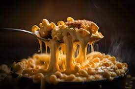

Mac And Cheese

Fideos con queso cheddar
cucharadita Fécula de maíz
250 g queso Cheddar rallado
250 g queso gruyere rallado
- Se cuece la pasta en agua con un poco de sal
- Mientras se cuece la pasta preparamos la salsa de queso. En una cazuela pequeña a fuego medio se derrite la mantequilla y se añade la harina. La tostamos muy ligeramente removiendo y añadimos la leche sin dejar de remover para que no se hagan grumos.
- Dejamos que hierva dos minutos y vamos añadiendo poco a poco los quesos, siempre removiendo para que poco a poco se vayan fundiendo y convirtiendo en un líquido espeso. Añadimos unos golpes de pimienta y de nuez moscada, mezclamos una última vez y mantenemos caliente.
- Cuando la pasta esté en su punto, la escurrimos y la devolvemos a la cazuela. Vertemos la salsa por encima y mezclamos bien el conjunto. Y listo para servir.